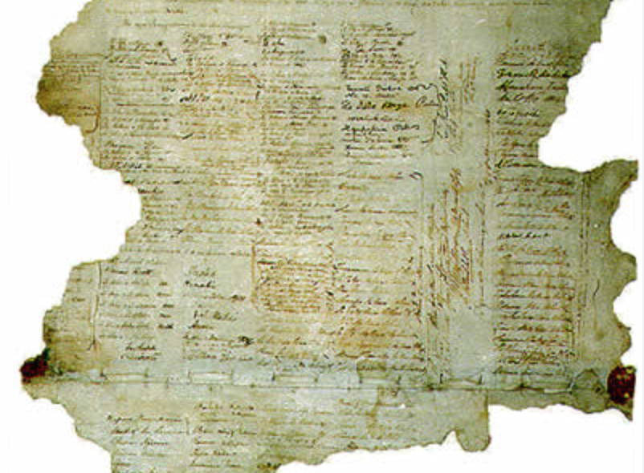
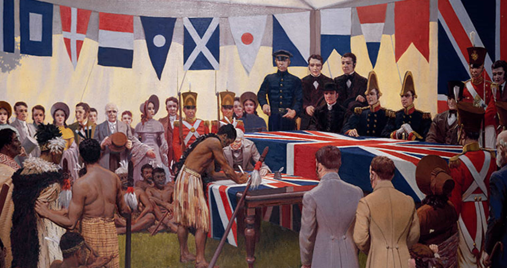
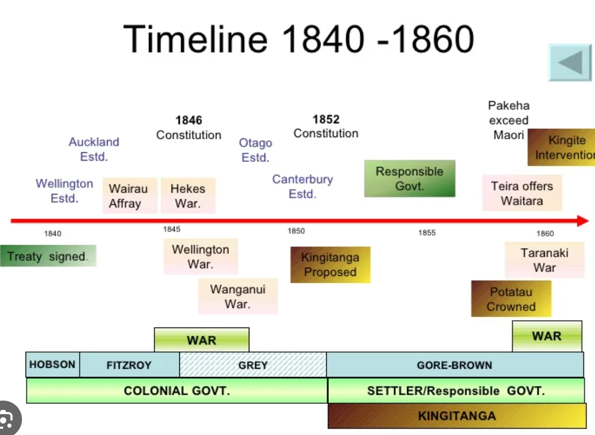

The Treaty of Waitangi:

The Treaty of Waitangi, signed on February 6, 1840, is a pivotal document in New Zealand's history. It represents an agreement between the indigenous Māori chiefs (represented by over 500 signatories) and the British Crown, establishing the foundation for the relationship between the two parties and laying down principles of governance, land ownership, and rights.
Who is involved:

The Treaty of Waitangi involves two primary parties: the Māori, the indigenous Polynesian people of New Zealand, and the British Crown, representing the colonial government of the United Kingdom. The Māori chiefs and representatives from various iwi (tribes) across New Zealand participated in the negotiations and signing of the treaty, alongside representatives of the British government.
History:

The history surrounding the Treaty of Waitangi is complex and multifaceted. It originates from the British Crown's desire to establish sovereignty over New Zealand while recognizing Māori ownership and rights to their lands. However, interpretations and implementations of the treaty's articles have led to significant disputes, conflicts, and debates over its true meaning and implications, shaping the socio-political landscape of New Zealand for generations to come. Understanding its historical context is crucial for comprehending its ongoing significance and the challenges faced in its application.
Other Websites:
- https://nzhistory.govt.nz/politics/treaty/the-treaty-in-brief
- https://en.wikipedia.org/wiki/Treaty_of_Waitangi
- https://teara.govt.nz/en/te-tiriti-o-waitangi-the-treaty-of-waitangi
- https://www.archives.govt.nz/discover-our-stories/the-treaty-of-waitangi
- https://www.tepapa.govt.nz/discover-collections/read-watch-play/maori/treaty-waitangi/treaty-close/full-text-te-tiriti-o
- https://www.britannica.com/event/Te-Tiriti-o-Waitangi